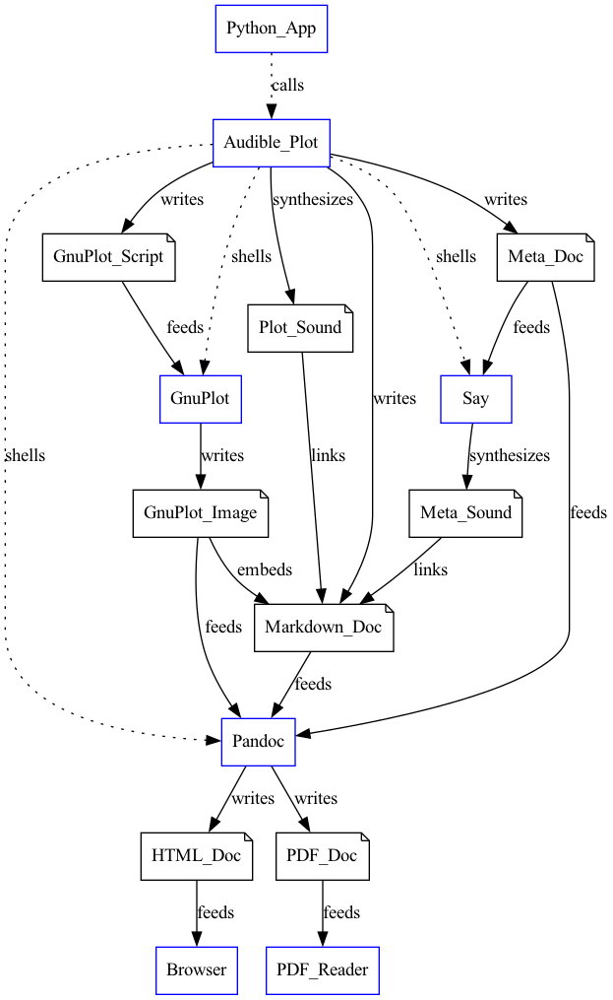

Software Design Concept
Audible-Plot
This document outlines the concept for the software design.
1. General Concept
The software design concept is to leverage existing well-documented and currently maintained open-source tools to produce a hybrid audible and visual rendering of a data series and associated descriptive text and meta-data, as well as a text table of the data.
The `python` language will be used to "glue" the tools together into an application to produce the outputs. The output text, graphics and audio will similarly be glued together with markdown text. The final output will be a HTML page or PDF page with one or more audible and visual plots and their meta-data and descriptive text.
The visual plot will be created by writing a `gnuplot` script and running it through `gnuplot` to produce a graphic file, which will be embedded in the `markdown` file, along with a link to the audible plot. (The `gnuplot` script may be a bash script to combine the gnuplot commands, data, and gnuplot command line options into one portable and readable file.)
The audible plot will be created by synthesizing tones of frequencies representing the data points.
The description and meta-data of the plot will also be converted to audio via a text-to-speech engine.
The final output will be created by writing a markdown text file that embeds the graphic and links to the audio and then running the markdown running it through `pandoc` to produce a HTML or PDF page (via LaTeX.)
Note that the python program, the gnuplot script, the markdown text file, and the LaTeX file are all simple text files, which are inherently blind-accessible. The final outputs of HTML or PDF files are also blind-accessible.
2. Theory of Operation
The Audible Plot module has three main groups of methods: describe, play, and plot. First, the describe methods are used to describe the plot, then either the play or plot methods (or both) are used to output the plot. The application may call the plot command before the play command to both 'plot' the data to a document and then 'play' the data to the user.
2.1. Description Methods
Several audible-plot methods allow the programmer to describe the plot and provide the data to be plotted. These descriptive methods are outlined below.
2.2. Play Method
The `play` method synthesizes a collection of speech and audio tone samples to present to a listening user. The information presented at the moment is controlled by pressing keys. These keys are tabulated below.
- d : speak the plot title and description
- x : speak the x-axis label and range
- y : speak the y-axis label and range
- f : speak the current function's label
- l : speak the entire legend of function letters and labels
- a, b, c : select function a, b, or c and either speak its label and current x/y position or play its tone (based on the most recently output: speech or tone.)
- up arrow: select the next function
- down arrow: select the previous function
- t : play the tone for the current function and point
- s : speak the x and y position of the current data point
- space : re-speak the x and y position or re-play the tone for the current data point (depending on most recent usage, speech or tone)
- left arrow : move to the previous data point and either speak its x/y position or play its tone.
- right arrow : move to next data point and either speak its x/y position or play its tone.
- tilda - move to the 0% position on the x axis and speak or play that data.
- 1, 2, through 9, 0 : move the the 10%, 20%, 90%, or 100% position on the x-axis and speak or play that data.
- i : prompt for the X-axis interval between left-right arrow steps.
- Y : y-zoom. Prompt for new range for y-axis tones, default 2X zoom around point.
- X : x-zoom. Prompt for new range for x-axis interval, default 2X zoom around point.
- q : quit the player
Screen reader key conventions should be considered for these.
2.3. Plot Method
The `plot` method synthesizes complete speech description and audio tone sound files to represent the entire plot. It also creates a visual plot using `gnuplot` and a HTML or PDF file using markdown and `pandoc`. The resulting file includes both a visual and audible representation of the plot.
The `plot` method operates as described below and illustrated in the following diagram:

- The programmer/user writes a small python app to describe and output the desired plot. The app may be created for a single use or may be more general purpose and prompt the app's user for the plot data and info.
- The app calls the audible-plot module and passes the data and
information describing the desired plot, then calls the plot
command. The plot command executes the following steps:
- Writes a `gnuplot` script containing the plot data, meta-data (title and axis labels). (This may be a bash script with an embedded `gnuplot` file to allow one script to include all the plot data including the command-line options. This allows for inspection, modification and reuse.)
- Shells out to `gnuplot` to create the plot image.
- Writes the plot meta-data to a file for speech synthesis.
- Shells out to `say` or `espeak` to convert the text to a speech audio file.
- Synthesizes the tones used to represent the plot. (These are the same as the `play` method, concatenated together.)
- Writes a markdown file that combines the plot meta-data, plot image, meta-data speech audio and plot audio into one document.
- Shells out to `pandoc` to create either an HTML document or a PDF1 document, as requested.
3. Thoughts on Scaling
Lawrence had some excellent ideas concerning scaling of data to audio. In short, we should scale the data to the scale of musical notes, not to frequencies. Humans, particularly musicians or non-tone-deaf people, perceive the notes of a piano keyboard as a linear progression, despite it actually being an exponential progression of frequency.
I suggest that we use the intervals of (12 semitones/octave) X (8 octaves) = (96 semitones), a total of 97 notes from C1 to C9, MIDI 24 to MIDI 120, inclusive, to represent the full "vertical" range of the plot. All those frequencies are audible, although the highest few are a bit squeaky and might be prone to aliasing at a sample rate of 44100 Hertz.
Lawrence says that 8 octaves is excessive and suggests 3 octaves. I suggested 5 octaves, 60 semitones, or an octave more range than a standard keyboard. 4 octaves might be good, 48 intervals or about 2% of range per note.
More generally, though, we should allow the user to request a range of notes, even allowing them to express the notes as a musical note and octave (like "A4") or as a MIDI note number. They should also be able to express what data values map to these limits conveniently, possibly multiple ways.
I imagine using python's managed properties (automatic getter and setter methods) to handle conversions between MIDI number, musical note and frequency.
Footnotes:
PDF documents require that LaTeX be installed.